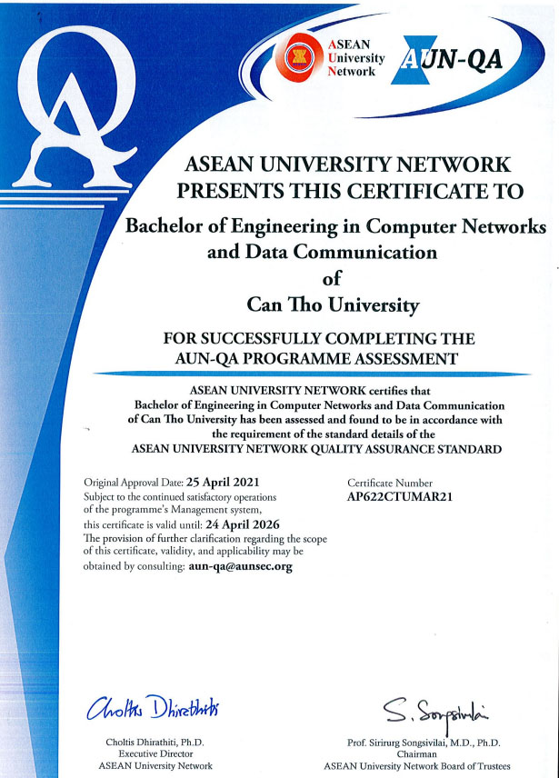
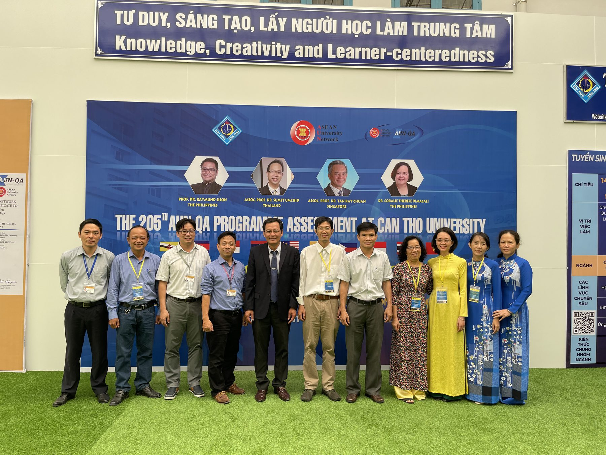
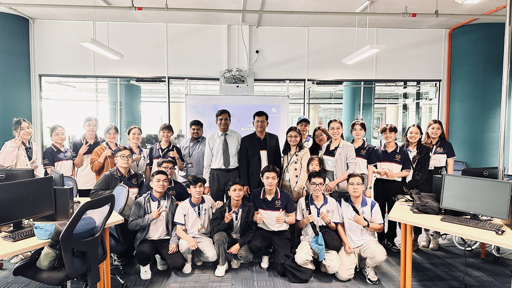
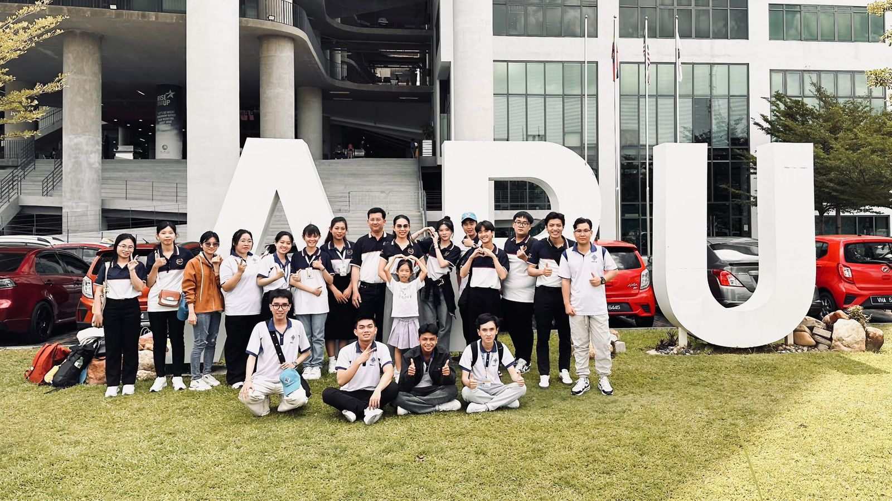

Engineer in CN & DC — High-quality Programme
168 credits · Higher learning outcomes than the standard programme · More than 60% of courses taught in English · Close cooperation with domestic and international partners
Introduction video of the high-quality programme
Programme objectives
The high-quality programme in Computer Networks and Data Communication trains engineers with solid professional knowledge and a deep understanding of networking and data communications. Students acquire professional programming skills and master advanced tools and technological solutions to solve practical problems in network security and high-performance computing. The programme also provides a solid foundation in mathematics, political and social sciences, law, physical education and national defence education.
Graduates are able to work independently or in teams, meeting the criteria of professional ethics, health and social awareness. They also develop foreign-language competence, in-depth research capability, creativity and an entrepreneurial spirit, contributing high-quality human resources to regional and national socio-economic development.
What makes this programme different
The high-quality programme is built on the standard programme, with higher learning outcomes benchmarked against programmes in advanced countries. The outcomes are higher in professional competence, IT application competence, leadership and teamwork, adaptability to the working environment, and foreign-language competence.
Taught in English
More than 60% of the courses are delivered in English.
International certifications
Additional courses prepare students for international certifications in networking.
Domestic and international lecturers
A learning, practice and research environment with the best available conditions.
International opportunities
Exchange and study abroad; graduates are well prepared for postgraduate study overseas.


Programme structure
A total of 168 credits, of which 140 are compulsory and 28 elective. The programme was promulgated under Decision No. 3268/QĐ-ĐHCT dated 23 June 2026 of the Director of Can Tho University.
| Knowledge block | Credits | Compulsory | Elective |
|---|---|---|---|
| Intensive English | 17 | 17 | 0 |
| General education | 40 | 35 | 5 |
| Disciplinary foundation | 41 | 41 | 0 |
| Specialisation | 53 | 47 | 6 |
| Advanced specialisation | 15 | 0 | 15 |
| Professional skills | 2 | 0 | 2 |
| Total | 168 | 140 | 28 |
Study plan by semester
The standard study plan of the high-quality programme spans 13 semesters over 4.5 years (three semesters a year), as set out in the programme specification applied from Cohort 51. The first year concentrates the 17 credits of Intensive English; semester 10 is devoted to 15 elective credits of advanced specialisation. Each semester heading gives its total credits. Underlined course codes link to the course syllabus.
(*) Non-credit requirements, not counted in the cumulative grade average. Earlier cohorts: Curricula by cohort; course–outcome matrix: Objectives & Learning Outcomes.

